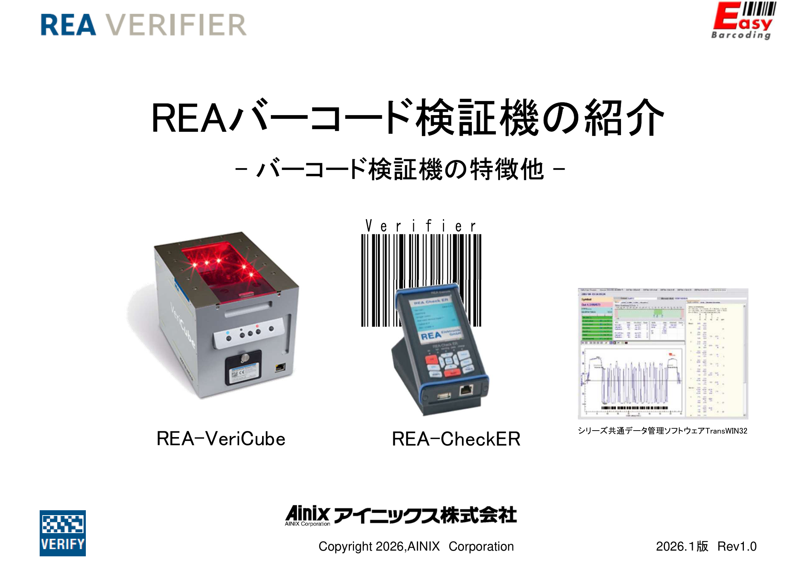
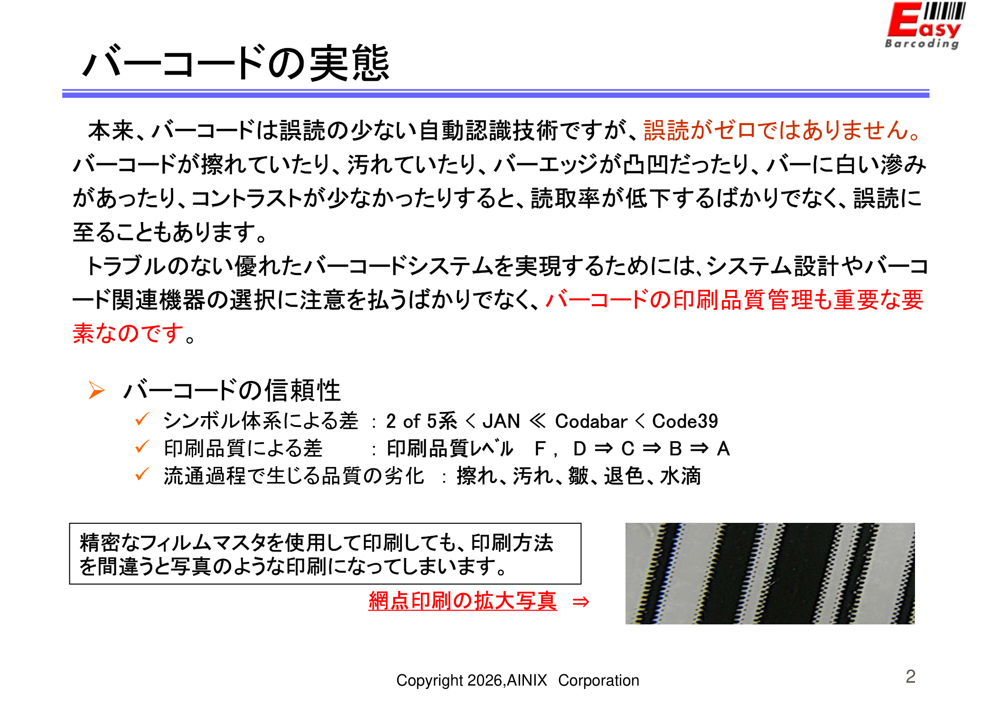
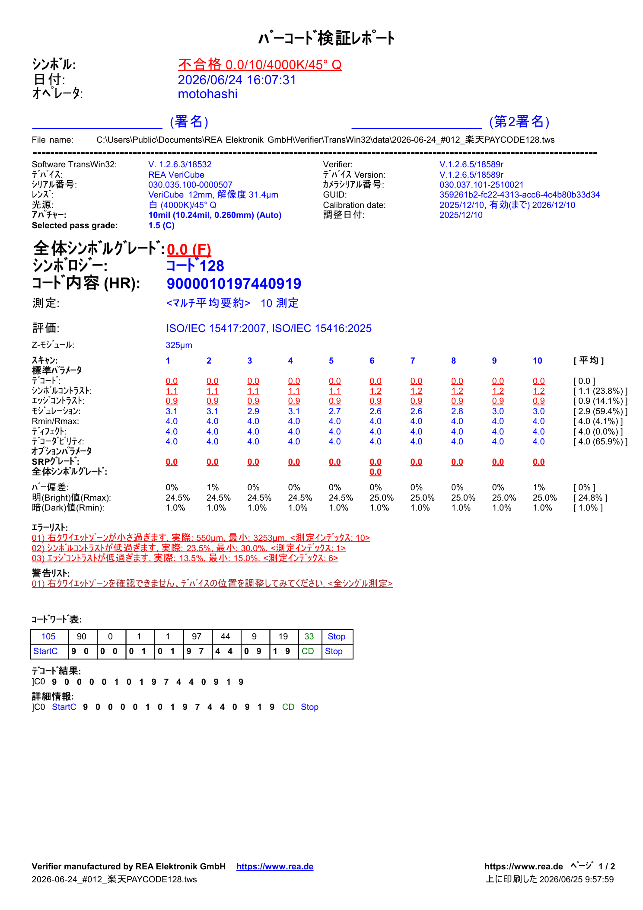
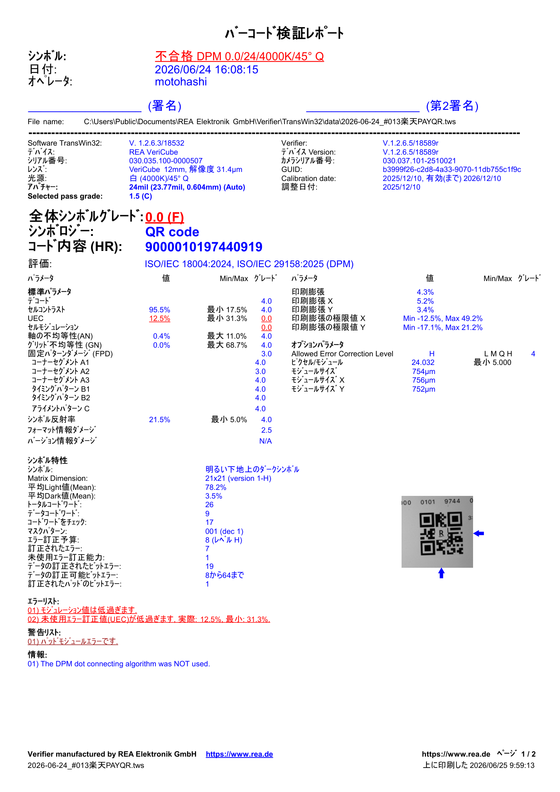
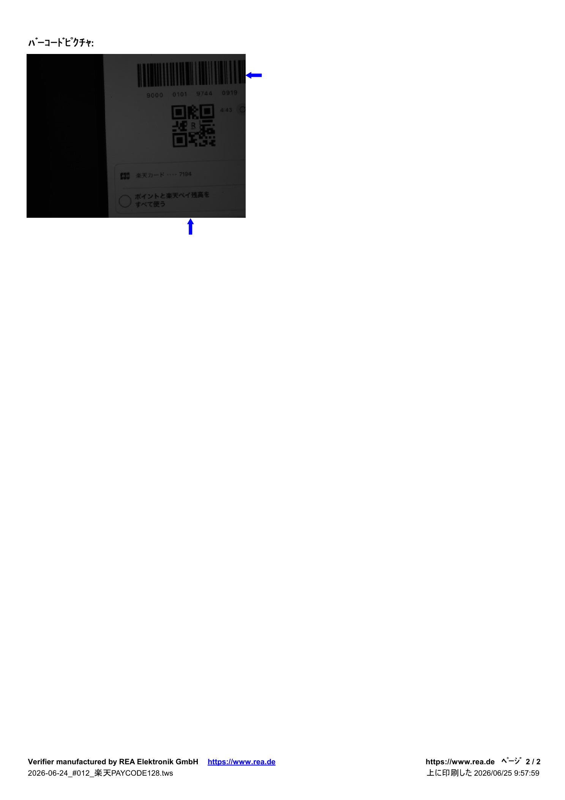

Evaluate other barcode verifier vendors
Research competing verifier companies (e.g. Axicon, Webscan, Cognex) and compare features, speed, and noise handling against REA.
Whether a barcode or QR code displayed on a smartphone screen can be reliably scanned across different devices, lighting, and angles.
CODE128 barcode and QR code are both used at checkout. Both failed ISO/IEC grade thresholds in the June 24 test — Grade 0.0 / F.
We currently have no company standards for barcode or QR code display quality. This project will define and establish those standards.
A barcode symbology — defines how data is encoded as bars and spaces. It's one of many formats: EAN-13, QR, DataMatrix, etc. CODE128 describes what the code is.
A quality standard (ISO/IEC 15416 for 1D, 15415 for 2D) that grades how well any barcode is rendered — contrast, quiet zone, modulation, edge sharpness — on a scale of A to F. ISO grading describes how well the code is displayed.
A CODE128 barcode can score A (perfect) or F (failed) under ISO grading. In our test, the code was valid CODE128 — but the display quality was so poor it scored Grade 0.0 / F.

| Scenario | Devices | Total scans | Result |
|---|---|---|---|
| 1 Barcode Verifier | 1 | 40 | ISO grade per phone & code |
| 5 POS systems | 5 | 200 | Pass/fail per POS model only |

5MP CMOS camera unit for verifying both 1D and 2D barcodes including QR codes. Supports 4 interchangeable camera modules (8mm–25mm). Includes DPM support.
Battery-powered portable CCD scanner for 1D barcodes only. PC-free field use. Lower cost entry point for basic verification needs.



Research competing verifier companies (e.g. Axicon, Webscan, Cognex) and compare features, speed, and noise handling against REA.
Identify potential POS companies as vendors and evaluate how their scanners handle current Rakuten Pay barcode quality in real conditions.
Weigh value vs. cost across all candidate vendors — accuracy, speed, integration effort, licensing, and maintenance over time.
Prepare a short-term implementation plan for FinTech One App using existing POS hardware already deployed within the Rakuten group.